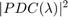
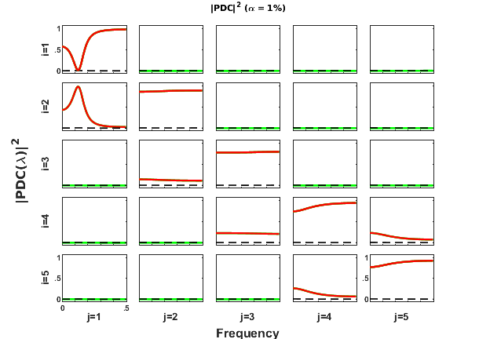
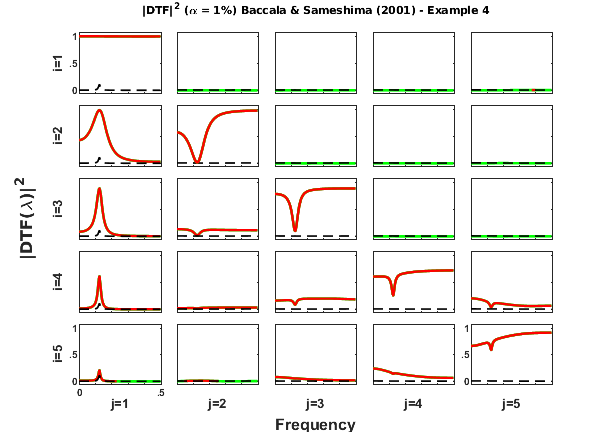
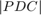

Contents
- BACCALA & SAMESHIMA (2001A) EXAMPLE 4
- Interaction diagram
- Equation system
- Data sample generation
- Granger causality test (GCT) and instantaneous GCT
- Original PDC definition estimation
-  Matrix-Layout Plotting
- Original DTF definition estimation
- Matrix Layout Plotting
- Result from the original article, Baccala & Sameshima (2001)
BACCALA & SAMESHIMA (2001A) EXAMPLE 4
DESCRIPTION: Five-dimensional linear VAR[2] Model Example 4
$x1==>x2 x2-->x3 x3-->x4 x4<-->x5$
Example from
Baccala & Sameshima (2001). Partial directed coherence: a new
concept in neural structure determination. _Biol. Cybern._
*84*:463-474.<https://dx.doi.org/10.1007/PL00007990>
clear; clc; format compact; format short
Interaction diagram
Figure 3a from Baccala & Sameshima. Biol. Cybern. 84:463-474, 2001.
Equation system
Data sample generation
nDiscard = 1000; % number of points to be discarded at beginning of simulation nPoints = 2000; % number of analyzed samples points u = fbaccala2001a_ex4( nPoints, nDiscard ); chLabels = {'x_1';'x_2';'x_3';'x_4';'x_5'}; fs = 1;
======================================================================
Five-dimensional linear VAR[2] Model Example 4
Baccala & Sameshima. Biol. Cybern. 84:463-474, 2001.
x1==>x2 x2-->x3 x3-->x4 x4-->x5 x5-->x4
======================================================================
Data pre-processing: detrending and normalization options
flgDetrend = 1; % Detrending the data set flgStandardize = 0; % No standardization [nChannels,nSegLength] =size(u); if nChannels > nSegLength, u = u.'; [nChannels,nSegLength]=size(u); end; if flgDetrend, for i=1:nChannels, u(i,:)=detrend(u(i,:)); end; disp('Time series were detrended.'); end; if flgStandardize, for i=1:nChannels, u(i,:)=u(i,:)/std(u(i,:)); end; disp('Time series were scale-standardized.'); end;
Time series were detrended.
MVAR model estimation
maxIP = 30; % maximum model order to consider. alg = 1; % 1: Nutall-Strand MVAR estimation algorithm criterion = 1; % 1: AIC, Akaike Information Criteria disp('Running MVAR estimation routine.') [IP,pf,A,pb,B,ef,eb,vaic,Vaicv] = mvar(u,maxIP,alg,criterion); disp(['Number of channels = ' int2str(nChannels) ' with ' ... int2str(nSegLength) ' data points; MAR model order = ' int2str(IP) '.']);
Running MVAR estimation routine. maxOrder limited to 30 IP=1 vaic=78242.251634 IP=2 vaic=76092.131561 IP=3 vaic=76127.690743 Number of channels = 5 with 2000 data points; MAR model order = 2.
Testing for adequacy of MAR model fitting through Portmanteau test
h = 20; % testing lag MVARadequacy_signif = 0.05; % VAR model estimation adequacy significance level aValueMVAR = 1 - MVARadequacy_signif; % Confidence value for the testing flgPrintResults = 1; [Pass,Portmanteau,st,ths] = mvarresidue(ef,nSegLength,IP,aValueMVAR,h,... flgPrintResults);
====================================================================================================
MVAR RESIDURES TEST FOR WHITENESS
----------------------------------------------------------------------------------------------------
Good MAR model fitting! Residues white noise hypothesis NOT rejected.
Pass = 0.038
st = 478.929
Granger causality test (GCT) and instantaneous GCT
gct_signif = 0.01; % Granger causality test significance level igct_signif = 0.01; % Instantaneous GCT significance level metric = 'diag'; % euc - original PDC or DTF; % diag - generalized PDC (gPDC) or DC; % info - information PDC (iPDC) or iDTF. flgPrintResults = 1; % To print or not GCT/iGCT results on command window. [Tr_gct, pValue_gct] = gct_alg(u,A,pf, gct_signif,flgPrintResults); [Tr_igct, pValue_igct] = igct_alg(u,A,pf,igct_signif,flgPrintResults);
====================================================================================================
GRANGER CAUSALITY TEST
----------------------------------------------------------------------------------------------------
Connectivity matrix:
NaN 0 0 0 0
1 NaN 0 0 0
0 1 NaN 0 0
0 0 1 NaN 1
0 0 0 1 NaN
Granger causality test p-values:
NaN 0.2752 0.8454 0.8809 0.8802
0 NaN 0.9337 0.9960 0.8440
0.7659 0 NaN 0.1470 0.4711
0.4211 0.3625 0 NaN 0
0.0780 0.3563 0.1061 0 NaN
====================================================================================================
INSTANTANEOUS GRANGER CAUSALITY TEST
----------------------------------------------------------------------------------------------------
Instantaneous connectivity matrix:
NaN 0 0 0 0
0 NaN 0 0 0
0 0 NaN 0 0
0 0 0 NaN 0
0 0 0 0 NaN
Instantaneous Granger Causality test p-values:
NaN 0.0338 0.3997 0.7826 0.8316
0.0338 NaN 0.0799 0.6160 0.9480
0.3997 0.0799 NaN 0.7591 0.8068
0.7826 0.6160 0.7591 NaN 0.7895
0.8316 0.9480 0.8068 0.7895 NaN
>>>> Instantaneous Granger Causality NOT detected.
====================================================================================================
Original PDC definition estimation
PDC analysis results are saved in c structure. See asymp_pdc.m or issue
>> help asymp_pdc
command for more detail.
nFreqs = 128; metric = 'euc'; alpha = 0.01; c = asymp_pdc(u,A,pf,nFreqs,metric,alpha); % Estimate PDC and asymptotic statistics
Matrix-Layout Plotting
flgColor = [0]; w_max=fs/2; flgPrinting = [1 1 1 0 0 0 3]; % plot auto PDC on main diagonal [h1,~, ~] = xplot('Baccala & Sameshima (2001a) - Example 4',c,... flgPrinting,fs,w_max,chLabels,flgColor); xplot_title(alpha,metric,'pdc');
Original DTF definition estimation
DTF analysis results are saved in d structure. See asymp_dtf.m.
metric = 'euc';
d = asymp_dtf(u,A,pf,nFreqs,metric,alpha);
Matrix Layout Plotting
flgColor = [0]; w_max=fs/2; vBarTitle = 'Baccala & Sameshima (2001) - Example 4'; [h2,~, ~] = xplot(vBarTitle,d,flgPrinting,fs,w_max,chLabels,flgColor); xplot_title(alpha,metric,'dtf',vBarTitle);
- Check & compare this results with Fig. 3b, page 469, Baccala & Sameshima (2001).
- Note that in the article the amplitude, , has been depicted. While here we preferred to plot and .
Result from the original article, Baccala & Sameshima (2001)
In the original article the results is as follow for comparison.